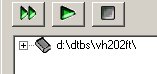
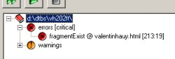
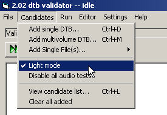
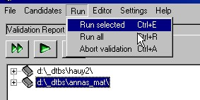
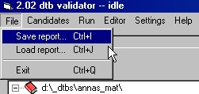
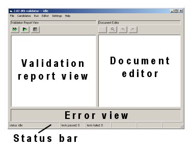
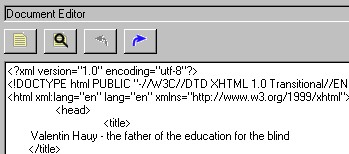
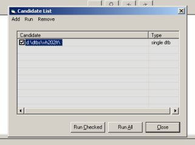

has turned red. The system will also generate a "ping" sound upon completion.
has turned red. The system will also generate a "ping" sound upon completion.The Daisy 2.02 Validator is a tool for conformance testing of Daisy 2.02 DTBs. The Validator analyzes a Daisy 2.02 DTB, and a generates a report containing a list of error and warning states found in the DTB.
error and warning is significant, and will be explained further in the section Interpreting the Result below.When performing the conformance test, the Validator applies a series of tests to the DTB. It compares data found in the DTB to data that is expected to be present. For example, the Validator will calculate the total playback time of the DTB and check whether this expected value correlates with the existing value. If the expectation is not met, the test has failed.
The tests performed have a wide and varying scope. Some tests will if they fail indicate that the DTB may not even be readable in a reading device. For example, one or several files may be missing, or damaged.
But not all tests that the Validator performs are aimed only at determining whether the DTB is readable. Conformance testing means that possible violations to specifications are checked, regardless of their impact on readability. In many cases, you will find that although the Validator reports that the DTB is not fully conformant, it will read fine in your reading device. For example, if information such as publishing date or file count is missing or erroneous, it will not have negative impact on readability. But the Validator will still report this as an error, since a normative statement in a specification has been violated.
For a full list and explanation of the tests that the Validator performs, see Appendix 1 in the Validator Developer Manual.
For a list of tests that the Validator does not perform, see Validator Scope below.
You may use the Validator to:
As explained further below, the Validator tool also contains a Document Editor, that may be used to correct existing errors. This is an additional feature - not an integrated part of the Validators core functionality - and requires extensive technical knowledge.
The binary distribution of the Daisy 2.02 Validator is made available by the Daisy Consortium at no cost. The use of the application is entirely at your own risk.
The library version of the Daisy 2.02 Validator is available under LGPL license. Read more at http://www.gnu.org/licenses/licenses.html#LGPL.
Visit dsidtb.sourceforge.net for further information on the Daisy Software initiative (DSI).
In addition to the Daisy 2.02 Validator, the Daisy Consortium are providing the following tools related to readability and conformance:
The Daisy 2.02 Validator will run under Windows™ 98, ME, 2000 and XP.
Before installing the Validator you need to make sure to have Microsoft XML Core Services(MSXML) 4.0 SP1 or higher, and Direct X 7 or higher installed. If you do not have these components installed, go to the following web adresses for download:
The Daisy 2.02 Validator uses a large amount of computer memory when performing the conformance testing. If you have a choice, we recommend that you use a computer with a minimum of 128 Mb RAM. Using a computer with even more RAM will increase performance further.
If you are running the validator in a networked environment, you should begin with checking that all directory paths that will be used are set up correctly. To do this, open the document paths dialog by selecting settings in the main menu and and then clicking on document paths. Instructions on the how to modify these settings are given in the document paths dialog user interface reference below.
To validate a DTB, select Candidates from the main menu and select Add single DTB. A file browser dialog will open.
Locate the directory where the DTB to be validated is located, select the NCC file and click OK. A branch with an icon looking like a book will now be added to the Validation Report View, located at the left part of the main window. Select Run from the main menu and click on Run all.
At this point, the Validator will start performing the conformance tests on the DTB. At the bottom of the screen, in the Status Bar, progress information will be displayed. Depending on the size of the book, the validation process will take from 30 seconds up to several minutes.
When the validation job has been completed, the icon of DTB candidate item in the Validation Report View has turned red. The system will also generate a "ping" sound upon completion.
When expanding the DTB candidate item branch, you will be able to read the results of the validation. (During the validation process, this branch reads "not validated".)
 If a candidate passes all tests without any errors or warnings, the text "no errors" will be displayed in the DTB candidate branch. If one or more tests failed, for each failed test an item will be added to the branch.
There are two subcategories of failed tests: error, and warning. The errors are further described as critical and non-critical. Generally, a critical error means that there is a serious error in the DTB that may affect readability negatively. A non-critical error is a specification requirement violation, but without risks for lowered readability.
A warning constitutes neither of the above, but rather that a specification recommendation has not been met, or that otherwise defined common practice/common sense has not been used.
Selecting one of the failed test items will fill the Error View in the lower part of the main screen with information about the error. For some errors, this will include a suggestion for correction.
Double-clicking or executing ENTER on one of the tests will - if related to a specific file - display that file in the Document Editor window at the right part of the screen. Here it is possible to review (and sometimes correct) the error.
You may save the report - all test results - for a single candidate to an external xhtml file. The report is structured so that it can easily be printed, viewed in an HTML browser or even loaded back into the validator at a later time. To save the report for a candidate, select that candidate in the Validation Report View, choose File from the main menu and click on Save report.
It is possible to perform validation on different candidate types. You may select to validate a single volume DTB, a Multi Volume DTB, or a single file of any type from a Daisy 2.02 DTB fileset.
| Candidate type | Comment |
|---|---|
| Single DTB |
Validates the full DTB. Requires the NCC document as input |
Multi Volume DTB  |
Validates the full DTB. Requires all NCC documents of the multi volume as input. When the last NCC has been added, select cancel in the file open dialog. |
Single File - NCC  |
Validates the NCC document internally, does not check any inter-document relations. |
Single File - SMIL  |
Validates the SMIL document internally, does not check any inter-document relations. |
Single File - Master SMIL  |
Validates the Master SMIL document internally, does not check any inter-document relations. |
| Single File - Content Document | Validates the XHTML content document internally, does not check any inter-document relations. |
Single File - Discinfo  |
Validates the Discinfo document internally, does not check any inter-document relations. |
As indicated above, the single file validation alternatives will not result in a reliable measure of the conformance state of the DTB, since inter-document relations (such as links between files) are only checked when the Single DTB or Multi Volume DTB alternatives are selected.
 Candidates are added by selecting the Candidates menu, and then clicking on the wanted alternative. In all cases, a file browser dialog will open, prompting you to point to the locus of the candidate.
Candidates are added by selecting the Candidates menu, and then clicking on the wanted alternative. In all cases, a file browser dialog will open, prompting you to point to the locus of the candidate.
The Validator allows three different modes of validation. The default mode is full conformance validation. This is the most demanding in terms of time consumption and DTB validitity. It will complete all tests as defined in the Validator Test Map.
The other two modes are:
The enabling and disabling of these modes is done in the candidate menu.
It is possible to add several candidates at once and validate them in one session. When a large number of DTBs need to be validated, it may be useful to set up such a batch queue and let the Validator process the queue for example during the night.
To run the Validator in Batch Mode, simply repeat the add candidate command until all wanted DTBs or single files have been added. Then make sure to select the run all (CTRL+R) alternative from the Run menu. Run selected (CTRL+E) will only validate the selected candidate in the queue.
Validation is executed using either Run Selected (CTRL+E) or Run All (CTRL+R) from the Run menu. Run Selected will only validate the selected (highlighted) candidate in the candidate list. Run All will validate all added candidates.
You can also use the single arrow green button  to run selected, or the double arrow green button to run all.
to run selected, or the double arrow green button to run all.
Depending on the size of the DTB and other circumstances (number of files, number of audio phrases) the validation process will take from 30 seconds to several minutes. During validation, the current progress and status is displayed in the Status Bar at the bottom of the screen.
When the validation of a candidate has completed, the system will generate a "ping" sound, and the previously grey book icon icon will turn red .
The result is obtained by selecting the candidate in the Validation Report View, and expanding its branch. If a candidate passes all tests without any errors or warnings, the text "no errors" will be displayed in the DTB candidate branch. If one or more tests failed, for each failed test an item will be added to the branch.
The failed tests are sorted into two fundamental categories: errors and warnings.
While an error is an occurance in the DTB that should be adressed, a warning is a much lighter phenomenon. A warning normally constitutes neither a specification requirement violation, nor a threat to the readability of the book. A warning is typically issued when the validator cannot find data that is recommended by a specification to be present. In other words, it points out that optional data is missing.
However, at the very least we recommend that you review the items in the warning category. There might be information there that is vital to you, even if it is not required by a specification. For example, many organisations regard narrator information as very important. The meta data element ncc:narrator is not required to be present by the Daisy 2.02 specification, and thus if it is missing it will be reported as a warning.
If the Validator issues a failed test to be an error, this means that a violation of a requirement within one of the specifications that determines the grammar or structural rules of this file has occured. The specification may be the Daisy 2.02 specification, or one of the W3C specifications that the Daisy 2.02 specification relies upon. (Normally, as explained in the Error View section of the User Interface Reference below, the error information contains a pointer to specification that has been violated.)
The error category has been divided further into two classes; critical and non-critical. These categories have been created to aid users who take primary interest in the readability aspect of validation. The Validator attempts to identify those errors who may impact readability negatively into the critical category, to make it easier to quickly get an overview of the status of the DTB.
From a conformance testing perspective, the critical and non-critical categories are equally critical. A specification requirement violation is always a serious error, regardless of whether the error has an impact on the readability of the book.
| Icon and name | Failure type | Failure class | Note |
|---|---|---|---|
 No errors No errors |
- | - | All tests passed. The Validator could not find any conformance problems in the candidate. |
 Warning Warning |
Warning | - | A specification recommendation has not been met. |
 Error Error |
Error | critical or non-critical | In case of non-critical: a specification requirement has been violated. The error will probably not affect the readability of the DTB. In case of critical: a specification requirement has been violated. The error may affect the readability of the DTB. |
As you select an error or warning item in the Validation Report View, the Error View at the bottom of the screen will be filled with information about the error. If you hit ENTER or doubleclick on the item, the corresponding document (SMIL, XHTML) will be opened in the Document Editor at the right part of the screen. If line and column information has been possible to provide, the cursor will positioned at the exact position within that document where the error occurs.
Using the information in the Error View, and the document in the Document Editor, you now have the possibility to track down the problem.
In the Error View, the failed test is described as accurately as possible. Note that sometimes the failure description is quite technical. Individuals that are less familiar with Daisy technology and XML may even find the information provided overly technical.
One of the basic ways to reach understanding of an error that initially seems unclear, is to review the specification requirement that has been violated. If your computer is online, you can do this by following the link associated with the error, which will take you to the specification, and sometimes even to the concerned paragraph within the specification. This is done either by copy and paste of the web adress given in the Error View, or by right-clicking on the error in the Validation Report View and selecting Goto specification.
For further support and assistance, you can turn to the Knowledge Base at the Daisy Website, and to the Daisy Consortium support emailing list.
See the Error View section of the User Interface Reference for further information on the content of the failure description.
Note that some errors hide other errors. If for example the NCC document is "malformed" or invalid to the DTD, this may mean that the validator has not been able to execute any further testing (testing the links between the NCC and SMIL files for example). In other words, validation was prematurely aborted due to a critical error in a document, and there may be additional errors in the DTB that simply cannot been discovered at this point.
<meta/> elements, and compares the values in the name and content attributes of these elements. The the name and content attributes is the "attribute pair" referred to.You may save the Validator Report as an XHTML formatted document. This contains a list of all found errors and warnings in the book. Each item in the list contains the same information as the information in the Error View.
 The Report Document can also be opened into the Validator. By doing this, you can reinstate the session even if the Validator (or the whole computer) has been shut down and restarted. To be able to view documents in the Document Editor however, this requires that the DTB is placed in the same folder as it was when the validation was run.
Note that the Validator does not automatically save the Report Document. You have to do this manually by selecting Save report in the File menu.
The report from the Validator is not guaranteed to be 100% accurate. This is due to two reasons.
The report from the Validator should be regarded as an indication on the state of the DTB. As the computational algorithms in the Validator improves over time, the indication will become more and more accurate, but the report can never be taken as a final and true statement.
The following items are not a part of the Validator testing scope.
The following items are currently not a part of the Validator testing functionality.
The main window of the Validator consists of four parts: the Validation Report View, the Document Editor, the Error View and the Status Bar.
The Validation Report View is a treeview that contains the DTBs selected for validation (referred to as 'candidates'). As a sub-branch of each candidate item the result of validation is displayed.
Selecting or left-clicking on an error item will show it's properties in the Error View.
 Right-clicking will show a pop up menu. This pop up menu has two options; 'Properties' and 'Goto specification'. 'Properties' will show a dialog with all information available on the test. 'Goto specification' will open an internet browser and go to the specification specified. This last feature is only available if the error is associated with a specification.
Right-clicking will show a pop up menu. This pop up menu has two options; 'Properties' and 'Goto specification'. 'Properties' will show a dialog with all information available on the test. 'Goto specification' will open an internet browser and go to the specification specified. This last feature is only available if the error is associated with a specification.
Double clicking or hitting ENTER on an error will - if the error is related to a file - show the file related to the error in the Document Editor and - if possible - position the cursor on the line and column where the error occurred.
The Error View shows information for the error selected in the Validation Report View. This information includes failure type (error (critical or non-critical) or warning) , the directory path and filename of the concerned file, line and column in the file (if existing), a longer error description than that in the Validation Report View, a comment/suggestion, and sometimes also a link to the associated specification. For technical information on this topic, see the VTM section below.
The comment field is often used to give a suggestion of change for the error. In the example picture below, the comment is used to provide a suggested value for the ncc:kByteSize meta item.
![image of the Error View - text says 'error (non-critical) in d:\_dtbs\hauy2\ncc.html [36:47]: meta element ncc:kByteSize does not match the calculated file size of the files found in the DTB file set, suggested value: 122129 For further information see http://www.daisy.org/publications/specifications/daisy_202.html#tnkbs'](gfx/errorview.jpg)
Note that the information in this window will vary depending on the currently selected test.
The Document Editor shows the currently active document. As you doubleclick or hit ENTER on a certain error item, if a certain document (XHTML or SMIL) is associated with the error, it will be displayed here.
Also, if the error occurs on a certain line and/or column within the document, the cursor will be positioned on that particular position.
If no line and column information is provided with the error item, the line and column information for this error item will read [-1:-1]. This will happen for example when the Validator reports that a certain information chunk is missing. Of course, something that does not exist can not be associated with a certain position within a document.
Apart from only viewing the erroneous document, the Document Editor also allows you to modify the content of document as in a common text editor. The On Screen Buttons section below contains a list of related functions.
As you save a document, the Validator will automatically make an incremental backup of the file previous to the save command. If the file you edited and saved was called 'ncc.html', then the backup version will be called 'ncc_.html'; that is, an underscore sign is added before the file extension. For each new save of the document, a new backup is made. Thus you can review or revert through your edit history. In this file list example:
ncc_.html
ncc__.html
ncc___.html
... the file with the most underscores is the one most recently saved.
The backup files will placed in the directory "val_bkp" appearing as a subdirectory in the directory where the DTB resides.
The Status Bar at the bottom of the main screen has eight cells. The first cell shows the current status of the Validator; this could be 'idle' or 'validating'. The second and third cells show total tests passed and total tests failed.
The fourth and fifth cells will display the text "LIGHT MODE ON" and "AUDIO TESTS OFF" if any of these modes are activated.
The sixth and seventh cells show current line and column numbers in the currently open document in the Document Editor.
The eighth cell will display the text "READ ONLY" if the opened document is encoded in Unicode (see the notice on unicode editing restrictions above).

| Button | Hotkey | Explanation |
|---|---|---|
| Validate all | CTRL+R | Validates all candidates in the validation candidates list |
| Validate selected |
CTRL+E | Validates the selected candidate in the validation candidates list |
 Abort Abort |
CTRL+A | Aborts all queued validation jobs |
 Save file Save file |
CTRL+S | Saves changes in the currently open document in the Document Editor |
 Search/Replace Search/Replace |
CTRL+F | Performs search/replace operations within the currently open document in the Document Editor |
| Go back | CTRL+B | Returns to the previous document (only works if a document has previously been opened with follow link) |
 Follow link Follow link |
CTRL+K | Follows the link of the first found <a> or <text> element after the cursor position in the open document |
 The candidate list offers a way of managing the validation candidates that is somewhat more flexible than the main window, especially when handling large batch queues of validation candidates. The following table explains the functionality of this screen.
| Menu name | Description |
|---|---|
|
-Add |
Add candidates |
|
Add single DTB |
Add single DTB to candidates list |
|
Add multivolume DTB |
Add multivolume DTB to candidates list |
|
-Add single file(s) |
Add single file(s) to candidates list |
|
Ncc |
Adds a single NCC file to the validation candidates list |
|
Smil |
Adds a single SMIL file to the validation candidates list |
|
Master smil |
Adds a single master SMIL file to the validation candidates list |
|
Content doc |
Adds a single content document file to the validation candidates list |
|
Discinfo |
Adds a single Discinfo file to the validation candidates list |
|
-Run |
Run validation |
|
Run checked |
Run validation on checked candidates |
|
Run all |
Run validation on all candidates |
|
-Remove |
Remove candidates |
|
Remove checked |
Remove checked candidates |
|
Remove unchecked |
Remove unchecked candidates |
|
Remove all |
Remove all candidates |
 The document paths dialog contains text-input fields for setting up the locations of the files needed by the validator. Under normal circumstances you do not need to edit these, but if you do so, make sure to enter directories as absolute paths, for example
The document paths dialog contains text-input fields for setting up the locations of the files needed by the validator. Under normal circumstances you do not need to edit these, but if you do so, make sure to enter directories as absolute paths, for example D:\myFiles\myDirectory\.
| Name | Description |
|---|---|
| DTD/ADTD | The location of the document type definition (DTD) and attribute document type definition (ADTD) files. This path defaults to the 'externals' directory found in the validator install directory. |
| Default report save path | The default directory where validation reports are saved. |
| Temporary path | An non writeprotected location where the validator can save temporary files |
 The General Settings dialog contains the following two options.
The General Settings dialog contains the following two options.
| key | function |
|---|---|
| CTRL + I | Save report |
| CTRL + J | Load report |
| CTRL + Q | Exit program |
| CTRL + D | Add single DTB to candidates list |
| CTRL + M | Add multi volume DTB to candidates list |
| CTRL + L | View candidate list |
| CTRL + E | Validate selected candidate |
| CTRL + R | Validate all candidates |
| CTRL + A | Aborts all qued validations |
| CTRL + S | Save document (Document Editor) |
| CTRL + F | Search / Replace (Document Editor) |
| CTRL + K | Follow link (Document Editor) |
| CTRL + B | Go back (Document Editor) |
| CTRL + P | Open document paths dialog |
| F1 | Open help |
| menu item | function |
|---|---|
|
-File |
File menu |
|
Save report |
Saves the report for the selected validation candidate in the Validation Report View |
|
Load report |
Loads a previously saved report |
|
Exit |
Exits the program |
|
-Candidates |
Candidates menu |
|
Add single DTB |
Adds a DTB to the validation candidates list |
|
Add multivolume DTB |
Adds a multi volume DTB to the validation candidates list |
|
-Add single file(s) |
Adds a single file to the validation candidates list |
|
Ncc |
Adds a single NCC file to the validation candidates list |
|
Smil |
Adds a single SMIL file to the validation candidates list |
|
Master smil |
Adds a single master SMIL file to the validation candidates list |
|
Content doc |
Adds a single content document file to the validation candidates list |
|
Discinfo |
Adds a single Discinfo file to the validation candidates list |
|
Light Mode |
Enables/Disables Light Mode |
|
Disable Audio tests |
Enables/Disables Disable Audio Tests Mode |
|
View candidates list |
Opens the candidates list dialog |
|
Clear all added |
Removes all candidates from the validation candidates list |
|
-Run |
Run menu |
|
Run selected |
Validates the selected validation candidate in the validate report view |
|
Run all |
Validates all validation candidates in the validation candidates list |
|
Abort validation |
Aborts all qued validations |
|
-Editor |
Editor menu |
|
Save document |
Saves changes in the currently open document in the Document Editor |
|
Search / Replace |
Searches or replaces words or sentences within the currently open document in the Document Editor |
|
Follow link |
Follows the link of the first found <a> or <text> element after the cursor position in the open document |
|
Go back |
Returns to the previous document (only works if you have opened a document with follow link) |
|
-Settings |
Settings menu |
|
Document paths |
Opens the document paths dialog |
|
General settings |
Opens the general settings dialog |
|
-Help |
Help menu |
|
Open User Manual |
Opens the User Manual in the mime connected html browser |
|
Open Developer Manual |
Opens the Developer Manual in the mime connected html browser |
|
Error log |
Opens the error log dialog |
|
About |
Opens the about dialog |
All graphical items on the screen has hotkeys and menu equivalents.
The Validation Report View is a TreeView Control. To expand and collapse the branches use the arrow keys. While here, to open a document associated with an error in the Document Editor, use ENTER. Cursor position is if possible set to the exact locus of the error. To go from the Validation Report View to the Error View, use TAB.
While moving around in a document in the Document Editor, the Status Bar contains current line and column information.
See the menu reference and the hotkey reference for further information.